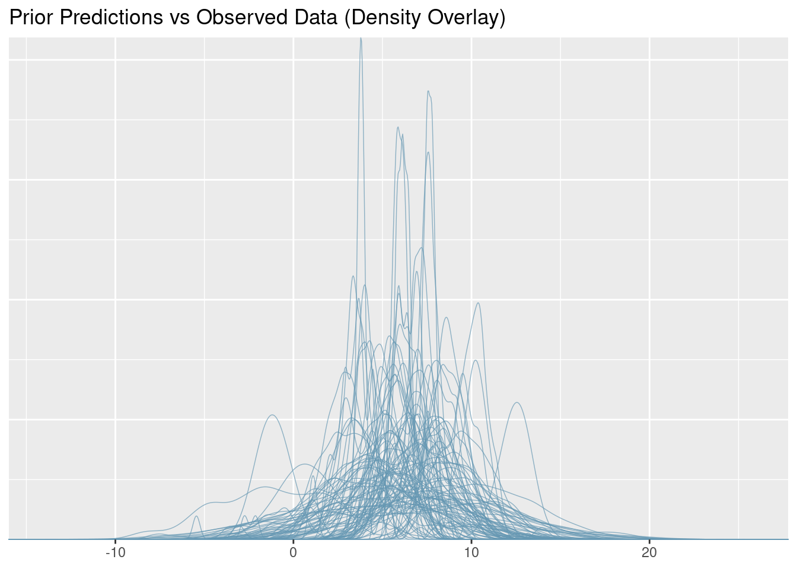
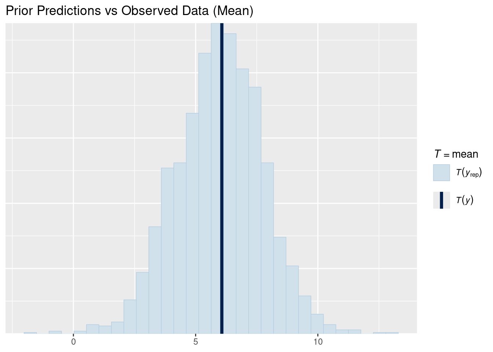
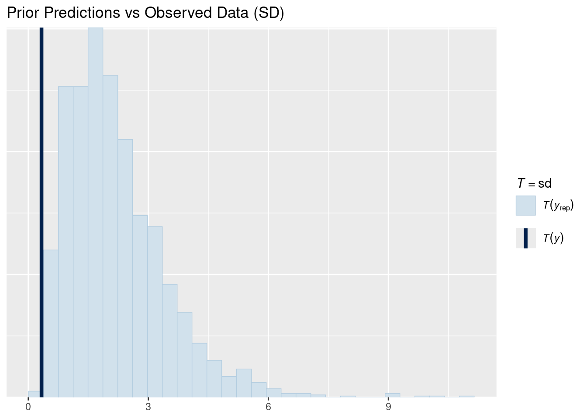
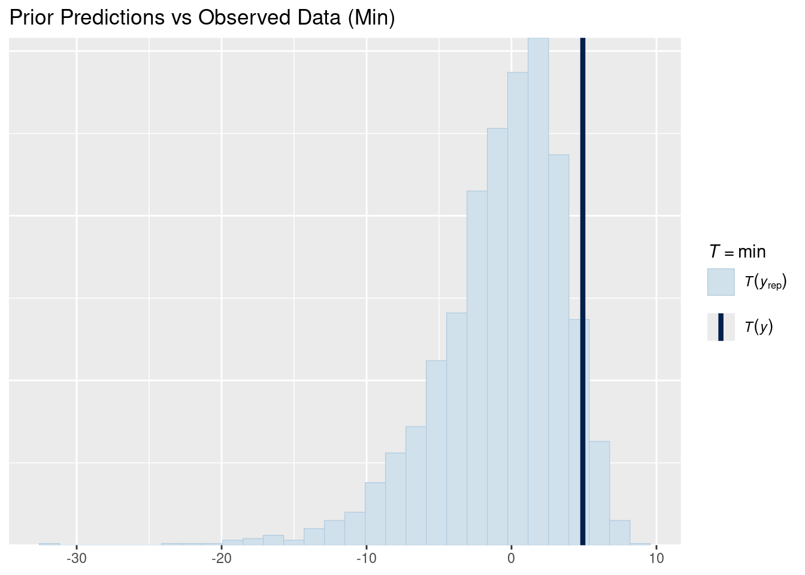
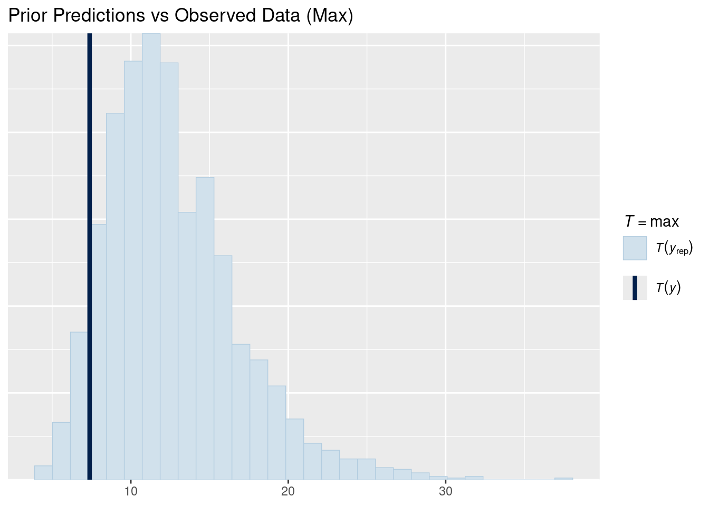
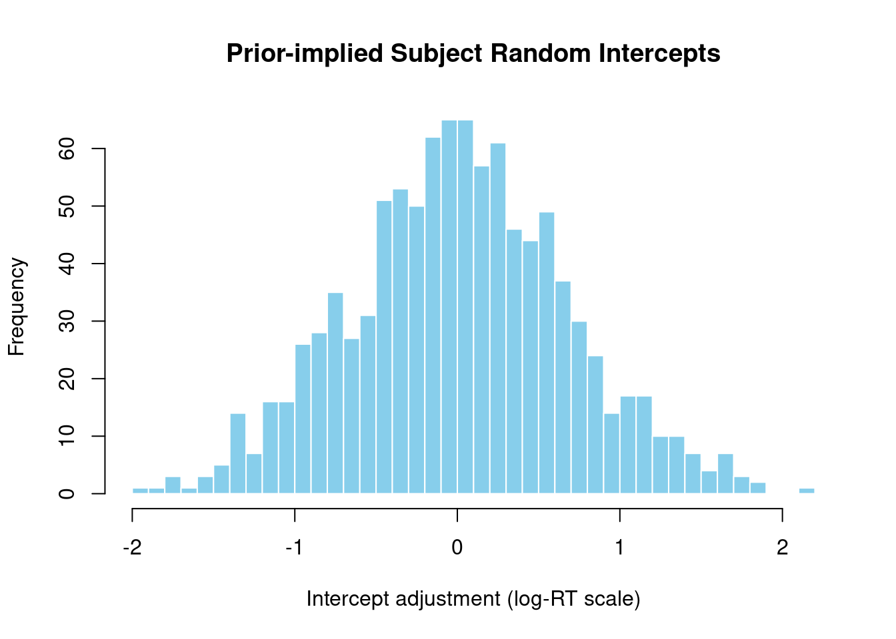
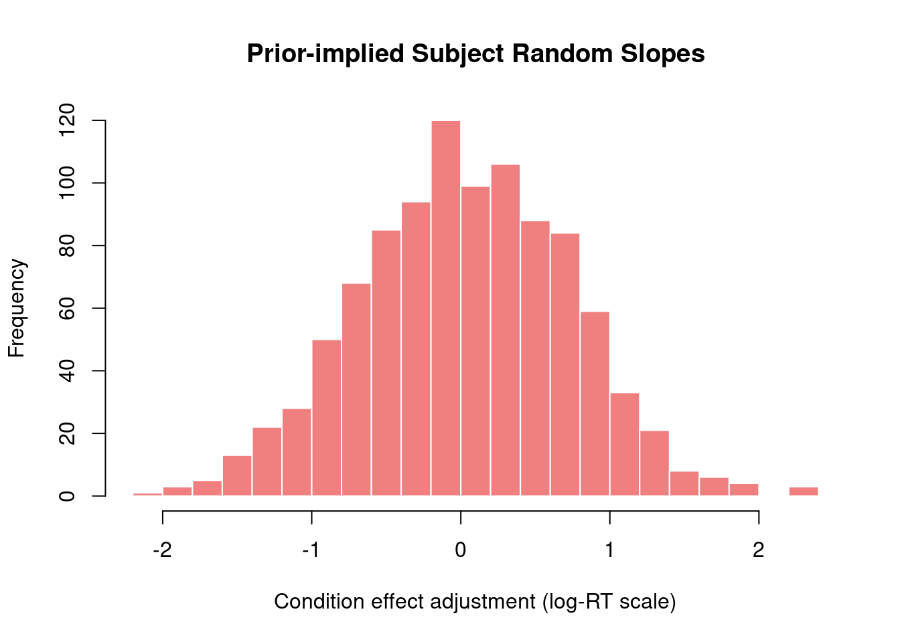
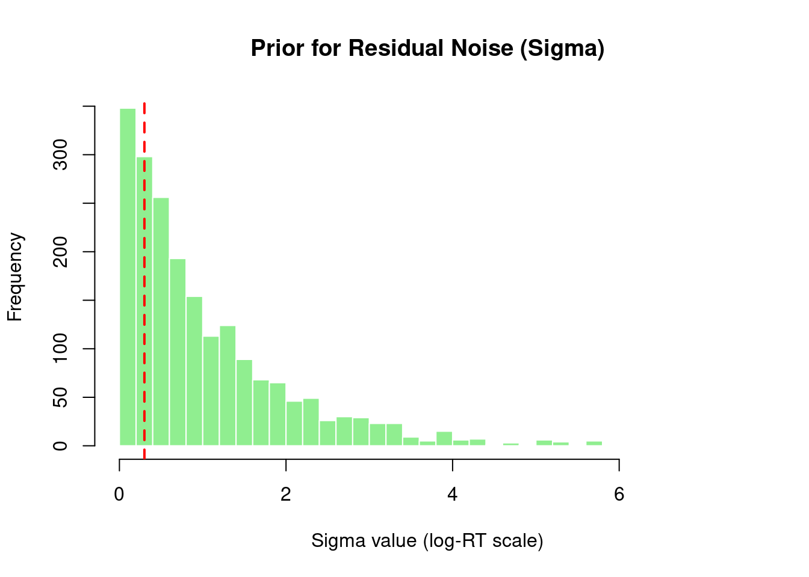

Bayesian Mixed Effects Models with brms for Linguists
Author
Job Schepens
Published
December 17, 2025
1 Prior Predictive Checks for Reaction Time Data
This document demonstrates how to validate priors for a Bayesian RT model before fitting to data.
1.1 Why Prior Predictive Checks Matter
Before fitting your model to actual data, validate that your priors generate sensible predictions. This is crucial because:
A prior that’s too restrictive can prevent the model from learning from data
A prior that’s too permissive might not regularize your estimates
It’s much easier to revise priors before fitting than after
1.2 Setup
Show code
library(brms)library(tidyverse)library(bayesplot)library(posterior) # For as_draws_df() - following Kurz's approach# Create example RT dataset.seed(42)n_subj <-20n_trials <-50n_items <-30rt_data <-expand.grid(trial =1:n_trials,subject =1:n_subj,item =1:n_items) %>%filter(row_number() <= n_subj * n_trials *3) %>%mutate(condition =rep(c("A", "B"), length.out =n()),log_rt =rnorm(n(), mean =6, sd =0.3) + (condition =="B") *0.15+rnorm(n(), mean =0, sd =0.1),rt =exp(log_rt) )# Define priorsrt_priors <-c(prior(normal(6, 1.5), class = Intercept),prior(normal(0, 0.5), class = b),prior(exponential(1), class = sigma),prior(exponential(1), class = sd),prior(lkj(2), class = cor))
1.3 Fitting Prior Only Model
Show code
# Create fits directory if it doesn't existif (!dir.exists("fits")) dir.create("fits")# Fit model with priors only# Using file argument to cache the fitted model and speed up re-runsprior_pred <-brm( log_rt ~ condition + (1+ condition | subject) + (1| item),data = rt_data, family =gaussian(),prior = rt_priors,sample_prior ="only",chains =4, iter =1000, # 4 chains, fewer iterations for prior checkscores =4, # Use 4 cores for parallel samplingverbose =FALSE,refresh =0,file ="fits/prior_pred_rt", # Cache model - only refits if data/formula/priors changefile_refit ="on_change"# Only refit when necessary)
## Prior Predictive Checks
### Visual Checks
::: {.cell}
```{.r .cell-code}
# Density overlay
pp_check(prior_pred, type = "dens_overlay", ndraws = 100, prefix = "ppd") +
labs(title = "Prior Predictions vs Observed Data (Density Overlay)")

Show code
# Mean comparisonpp_check(prior_pred, type ="stat", stat ="mean") +labs(title ="Prior Predictions vs Observed Data (Mean)")

Show code
# SD comparisonpp_check(prior_pred, type ="stat", stat ="sd") +labs(title ="Prior Predictions vs Observed Data (SD)")

Show code
# Min comparisonpp_check(prior_pred, type ="stat", stat ="min") +labs(title ="Prior Predictions vs Observed Data (Min)")

Show code
# Max comparisonpp_check(prior_pred, type ="stat", stat ="max") +labs(title ="Prior Predictions vs Observed Data (Max)")

:::
1.4 Prior Distributions
Following Kurz’s approach, we extract prior samples using as_draws_df() from the posterior package.
Show code
# Extract prior draws as a data frame (Kurz's method)# This works seamlessly with tidyverse and gives us a proper data framelibrary(posterior)prior_samples <-as_draws_df(prior_pred)
1.4.1 Intercept Prior
Show code
# Now we can access columns directly from the data frameintercept_vals <- prior_samples$b_Interceptcat("Intercept prior (log scale):\n")
cat("\nCondition effect prior (RT scale in ms):\n")
Condition effect prior (RT scale in ms):
Show code
print(exp(effect_q))
2.5% 50% 97.5%
0.3682863 0.9859524 2.5803317
Show code
# Visualizationhist(effect_vals, main ="Prior for Condition Effect (log-RT scale)",xlab ="Condition B effect",breaks =50, col ="lightcoral", border ="white")abline(v =0, col ="red", lwd =2, lty =2)
For prior predictive checks, we examine the implied distribution of subject-specific parameters by extracting the hyperprior SDs and simulating random effects.
1.5.1 Subject Random Intercepts
Show code
# Extract hyperprior SDs from prior samplessd_subject_intercept <- prior_samples$sd_subject__Interceptcat("Subject random intercept SD prior:\n")
# Simulate random effects from this priorset.seed(123)n_sims <-1000simulated_intercepts <-rnorm(n_sims, mean =0, sd =median(sd_subject_intercept))cat("\nImplied subject random intercepts (log scale):\n")
# Combine with typical intercept value from priorintercept_median <-median(intercept_vals)subject_rt <-exp(intercept_median + subject_int)print(subject_rt)
2.5% 50% 97.5%
110.2634 414.1676 1640.1214
Show code
cat("Prior implies subject RTs range from", round(subject_rt[1]), "to", round(subject_rt[3]), "ms\n")
Prior implies subject RTs range from 110 to 1640 ms
Show code
# Visualizationhist(simulated_intercepts, main ="Prior-implied Subject Random Intercepts",xlab ="Intercept adjustment (log-RT scale)",breaks =30, col ="skyblue", border ="white")

1.5.2 Subject Random Slopes
Show code
# Extract hyperprior SDs for slopessd_subject_slope <- prior_samples$sd_subject__conditionBcat("Subject random slope SD prior:\n")
# Simulate random slope effectssimulated_slopes <-rnorm(n_sims, mean =0, sd =median(sd_subject_slope))cat("\nImplied subject random slopes (log scale):\n")
# Visualizationhist(simulated_slopes,main ="Prior-implied Subject Random Slopes",xlab ="Condition effect adjustment (log-RT scale)",breaks =30, col ="lightcoral", border ="white")

1.5.3 Residual Noise Distribution
Show code
if (!is.null(sigma_vals) &&is.numeric(sigma_vals)) {hist(sigma_vals,main ="Prior for Residual Noise (Sigma)",xlab ="Sigma value (log-RT scale)",breaks =30, col ="lightgreen", border ="white")abline(v =0.3, col ="red", lwd =2, lty =2)cat("\nInterpretation: Red line shows typical residual SD (0.3) for RT data\n")cat("Our prior puts", round(mean(sigma_vals <0.3) *100, 1), "% probability below this value\n")} else {plot(1, main ="Sigma visualization", xlab ="", ylab ="")text(1, 1, "Sigma samples not available")}

Interpretation: Red line shows typical residual SD (0.3) for RT data
Our prior puts 25.4 % probability below this value
1.5.4 Random Effects Comparison
Show code
# Density plot comparing intercepts and slopesplot(density(simulated_intercepts),main ="Prior-implied Random Effects Distributions",xlab ="Effect size (log scale)",col ="blue", lwd =2, xlim =range(c(simulated_intercepts, simulated_slopes)),ylim =c(0, max(density(simulated_intercepts)$y, density(simulated_slopes)$y)))lines(density(simulated_slopes),col ="red", lwd =2)legend("topright", c("Intercepts", "Slopes"), col =c("blue", "red"), lwd =2)
✗ No variation between subjects: SD priors too small
1.7 Summary
Before fitting your model to actual data, always validate that your priors: 1. Generate reasonable predictions 2. Allow the data to inform the posterior 3. Respect domain knowledge constraints